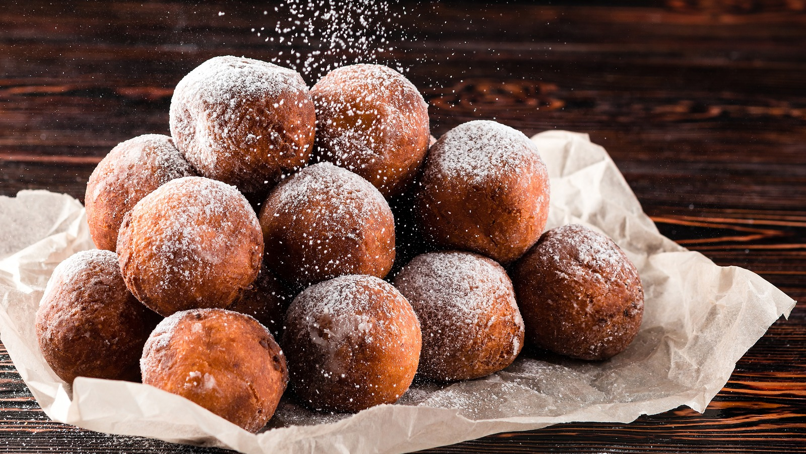

Calas is a specialty of New Orleans consisting of deep-fried rice balls that are smothered in powdered sugar. The dough – made with boiled rice, yeast, eggs, sugar, and flour - is dense and chewy, while the center is creamy. These fritters are typically flavored with nutmeg and cinnamon, and they are traditionally served for breakfast, with café au lait on the side.
Meal prep time : 35 minutes
Servings : 18